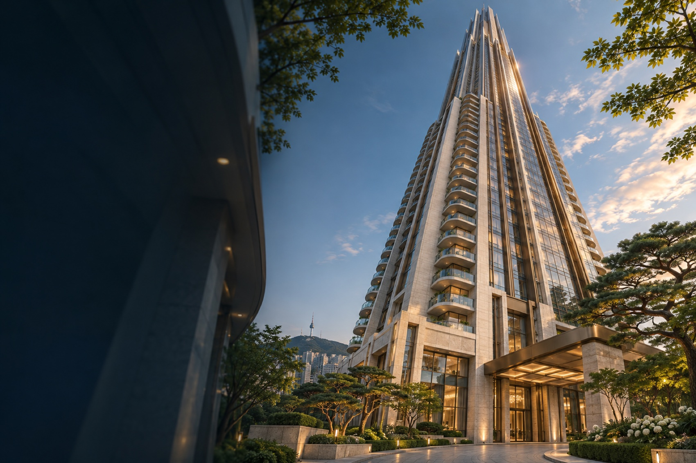

편집#021 · 헌집 줄게 새집 다오
가상의 시나리오 · 분양 광고
초역세권 320층.
1층까지 단 20분
기획·디렉터 = 안재현 기자
“왜 지각했어?”
“20분 전에 집에서 나왔는데요. 아직 1층 못 왔어요.”
헌집을 헐고 320층을 짓는다면

화면을 좌우로 끌어 실린더와 연결 핀을 보세요.
이 브라우저에서 3D 장면을 열 수 없어 철거 전 화면을 보여드립니다.
39층으로 다시 짓는데 네 가구가 줄어든다
서울 용산구 이촌동 강변·강서아파트 재건축조합은 11월 30일 시공사 입찰을 마감할 예정이다. 주민들이 조합을 세운 지 33년. 서울시가 고시한 계획은 최고 39층, 209가구다. 고시 141쪽에는 기존 213가구에서 오히려 네 가구가 줄어든다고 적혀 있다. 조합 입찰공고 ↗
1971~1972년에 지은 두 아파트는 이미 땅을 빽빽하게 쓰고 있었다. 서울시의 9월 3일 고시를 보면 기존 부지의 용적률은 337.26%였다. 땅 100㎡당 용적률에 넣어 계산하는 각 층의 바닥면적을 더하면 337㎡가 넘었다는 뜻이다. 당시 이 지역의 상한은 300%였다. 서울시는 사업성이 낮아 재건축이 오래 지체됐다고 설명했다. 서울시 심의 결과 ↗
- 기존 부지 용적률
- 337.26%
- 빈 땅 편입 후 허용용적률
- 317.7%
- 새 아파트 계획용적률
- 396.95%
공공재건축을 추진하면서 옆 빈 땅 626.8㎡가 사업지에 들어왔다. 서울시는 기존 부지와 새로 편입한 땅에 각각 337.26%, 200%를 적용한 뒤 면적을 기준으로 평균을 냈다. 그렇게 나온 허용용적률이 317.7%다. 용도지역은 제3종일반주거지역에서 준주거지역으로 바뀌었다. 공공시설 기부채납을 반영한 상한은 361.7%다. 공공주택 공급에 따른 완화까지 반영해 계획용적률을 396.95%로 잡았다. 11월 13일 IPARK현대산업개발이 수주 의사를 밝혔다. 서울시 9월 결정고시 ↗ 뉴시스 보도 ↗
그러면 헌집 한 채를 새집 한 채와 맞바꿀 수 있을까. 고시 133쪽에서 서울시는 새 아파트 전용 56㎡형의 권리자 분양가를 8억4000만원으로 추산했다. 여기서 자기 집의 권리가액을 빼야 조합원이 추가로 부담할 몫이 나온다. 시공사 선정과 감정평가가 남은 단계라 가구별 금액은 아직 확정되지 않았다.
새 아파트 209가구 중 몇 채를 일반에 분양할까
서울시 고시를 보면 새 아파트 209가구 가운데 24가구는 공공주택이다. 나머지 185가구에서 조합원이 분양받을 몫을 빼면 일반분양 물량이 나온다. 조합은 이 집들을 분양해 받은 돈을 공사비에 보탤 수 있다.
1층까지 20분은 어떻게 계산했나. 가상 광고 속 320층에서 1층까지 내려오려면 319개 층을 지난다. 층당 3m로 잡으면 957m. 편집부는 승강기가 분속 60m로 움직인다고 가정했다. 쉬지 않고 내려오면 15분 57초. 중간에 12번, 한 번에 20초씩 서면 4분이 더 걸린다. 합쳐서 19분 57초, 약 20분이다. 가속·감속과 탑승 대기 시간은 계산에서 뺐다.
기획·디렉터 = 안재현 기자 처음으로 ↑